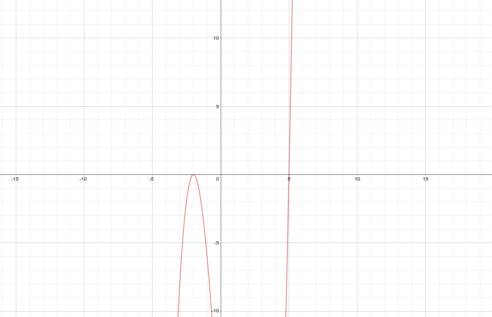
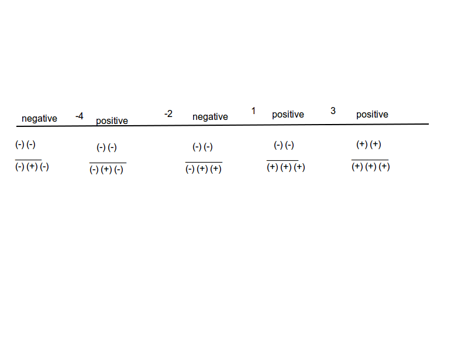

Polynomial Functions, Their Graphs And Applications¶

Graphs of polynomial functions by graphing a polynomial that shows comprehension of how multiplicity and end behavior affect the graph¶
Source: Found an online tutorial about multiplicity, I got the function below from there.
Explanation:
This artifact demonstrates graphs of polynomial functions by graphing a polynomial that shows comprehension of how multiplicity and end behavior affect the graph.
The graph below has two zeros (5 and -2) and a multiplicity of 3.
While the zeroes overlap and stay the same, changing the exponents of these linear factors changes the end behavior of the graph.
The exponents currently add up to 3 (multiplicity), which is an odd number.
Because the multiplicity is odd, the graph looks the way it does. If you were to change the multiplicity to any odd number, the graph would have the same end behavior and look essentially the same.
If the multiplicity were even, the end behavior would be different (parabolic).
Artifact:
Graph of \((x-5)(x+2)^2\)
Factoring a higher degree polynomial with and without complex zeros¶
Source: Notes
Explanation:
This artifact demonstrates factoring a higher degree polynomial with and without complex zeros.
Artifact:
Reduce \(x^4 - 3x^3 - 6x^2 + 6x + 8\)
Synthetic division (divided by -1)
| 1 | -3 | -6 | 6 | 8 |
|---|---|---|---|---|
| 0 | -1 | 4 | 2 | -8 |
| 1 | -4 | -2 | 8 | 0 |
\((x+1)(x^3-4x^2-2x+8)\)
Synthetic Division (divided by 4)
| 1 | -4 | -2 | 8 |
|---|---|---|---|
| 0 | 4 | 0 | -8 |
| 1 | 0 | -2 | 0 |
\((x+1)(x-4)(x^2-2)\)
\((x+1)(x-4)(x-\sqrt{2})(x+\sqrt{2})\)
Factoring a higher degree polynomial that has a leading coefficient that is not one¶
Source: Notes
Explanation:
This artifact demonstrates factoring a higher degree polynomial that has a leading coefficiant that is not one.
Artifact:
Reduce \(3x^4 + 8x^3 + 6x^2 + 3x - 2\) to linear factors.
Synthetic Division (divided by -2)
| 3 | 8 | 6 | 3 | -2 |
|---|---|---|---|---|
| 0 | -6 | -4 | -4 | 2 |
| 3 | 2 | 2 | -1 | 0 |
\((x + 2) (3x^3 + 2x^2 + 2x -1)\)
Synthetic Division (divided by \(1 \over 3\))
| 3 | 2 | 2 | -1 |
|---|---|---|---|
| 0 | 1 | 1 | 1 |
| 3 | 3 | 3 | 0 |
\((x + 2) (x - {1 \over 3}) (3x^2 + 3x + 3)\)
\((x + 2) (x - {1 \over 3}) 3(x^2 + x + 1)\)
\((x + 2) (3x - 1) (x^2 + x + 1)\)
\(\text{from }(x^2 + x + 1) \text{ x = } {-1 \over 2} \pm {i\sqrt{3} \over 2}\)
\((x + 2) (3x - 1) (x - ({-1 \over 2} - {i\sqrt{3} \over 2})) (x - ({-1 \over 2} + {i\sqrt{3} \over 2}))\)
\((x + 2) (3x - 1) (x + {1 \over 2} - {i\sqrt{3} \over 2}) (x + {1 \over 2} + {i\sqrt{3} \over 2})\)
\({1 \over 2} (x + 2) {1 \over 2} (3x - 1) 2 (x + {1 \over 2} - {i\sqrt{3} \over 2}) 2 (x + {1 \over 2} + {i\sqrt{3} \over 2})\)
\({1 \over 2} (x + 2) {1 \over 2} (3x - 1) (2x + 1 - i\sqrt{3}) (2x + 1 + i\sqrt{3})\)
Solving polynomial equations and inequalities¶
Source: Chapter 2 Test Non Calculator #2
Explanation:
This artifact demonstrates solving polynomial equations and inequalities.
Appropriate Use of Technology
I wanted to show a sign chart somehow.
I realized that a LaTeX expression would not have been appropriate, because it would be monstruous.
I concluded that the most appropriate use of technology (in this case) was to draw a sign chart my self, and include it on the page.
Numeric Algebraic Graphic Connection
The original problem was algebraic, but I solved it numerically using a graph.
I used the one-dimensional graph as a reference point.
I plugged in numbers in between the sign changes on the graph to evaluate the possible solutions for the problem.
Awareness
I’m aware that the question was specifically less than or equal to 0.
This is why I included the number 3 as one of the answers (it evaluates to 0).
Artifact:
Solve \({x^2 - 6x + 9 \over x^3 + 5x^2 + 2x -8} \le 0\)
Synthetic Division (\(x^3 + 5x^2 + 2x -8 \over (x-1)\))
| 1 | 5 | 2 | -8 |
|---|---|---|---|
| 0 | 1 | 6 | 8 |
| 1 | 6 | 8 | 0 |
\((x-1)(x^2 + 6x + 8)\)
\((x-1)(x + 2)(x + 4)\)
\({x^2 - 6x + 9 \over x^3 + 5x^2 + 2x -8} \le 0 = (-\infty, -4), (-2, 1), 3\)
Applications of polynomial functions¶
Source: section 2.3 Homework question #65.b
Explanation:
This artifact demonstrates applications of polynomial functions.
Independent thinking
The final answer is actually one of two because it is the result of a square root, which always yields two answers.
Where the independent thinking comes in is the part where I take the absolute value of the square root.
I knew that it wouldn’t make sense to have a blood cell that is a negative distance away from the center of an artery.
So I decided to discard the negative answer by taking the absolute value of the square root.
Artifact:
Research conducted at a national health research project shows that the speed at which a blood cell travels in an artery depends on its distance from the center of the artery.
The function \(v = 1.19 - 1.87r^2\) models the velocity (in centimeters per second) of a cell that is r centimeteres from the center of an artery.
If a blood cell is traveling at \(0.975 {cm \over sec}\), estimate the distance the blood cell is from the center of the artery.